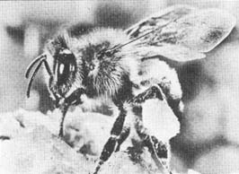

If you're not familiar with beekeeping, here's some basic information about the creatures (see also "Bee Talk", MOTHER NO. 12, pg. 39).
SWARM : bees that have left the hive with their queen to establish a new family (colony). Those left behind raise a new queen. A prosperous colony may have up to 75,000 or more members at the peak of summer activity.
EGGS: The queen, who is the only fully developed female in a hive, lays two kinds of eggs: fertile and infertile. The nurse bees determine whether a fertile egg will mature into a queen or a worker by the food they give the developing larva. If the egg is to become a future mother, a cell resembling a small peanut is built around it as the larva grows. At the end of the larval period the cell is sealed and the development of the pupa begins. After 16 days the queen is fully grown and gnaws her way out, sometimes assisted by the workers. Only one breeding female is allowed to remain permanently in the colony.
WORKER: an undeveloped female, smaller than the queen. As larvae, workers are fed less nutritious food and hatch from smaller cells in 20 to 21 days. Their function is just what the name implies: They gather nectar which is converted into honey, pollen and water for feeding the young and gums and resins which are used to varnish the inside of the hive and seal every crevice. Workers build the combs, care for the queen, feed the young, carry out the dead, ventilate the hive, generate heat in winter and guard against intruders . . . they even give their lives if necessary to protect the colony. (A worker dies when it uses its stinger which is barbed and not retractile like the queen's . . . which is smooth and used only to kill a rival female.) Finally, they just work themselves to death.
DRONE: a male bee, which hatches from an infertile egg in 24 to 25 days and requires a slightly larger cell than a worker. Drones do no work in the field or hive and serve only to fertilize young queens.
HIVE: Bees will move into any home from the cavity in a hollow tree to a portion of a cavern. Modern hives are so designed that the beekeeper may manipulate the various parts to control the activities of the insects and simplify the removal of honey.
More details on these and other matters relating to bees may be found in the following books:
The Hive and the Honey Bee , edited by Roy A. Grout. $6.20 postpaid from Dadant and Sons, Hamilton, Ill. 62431.
How to Keep Bees and Sell Honey , $1.00 from the Walter T. Kelley Co., Clarkson, Ky. 42726.
ABC and XYZ of Bee Culture , by A.I. Root. $6.50 from the A.I. Root Co., Medina, Ohio 44256 (or from MOTHER'S Bookshelf).
Starting Right with Bees , $1.10 from the A.I. Root Co., Medina, Ohio 44256 (or from MOTHER'S Bookshelf).
|
 |
|
|